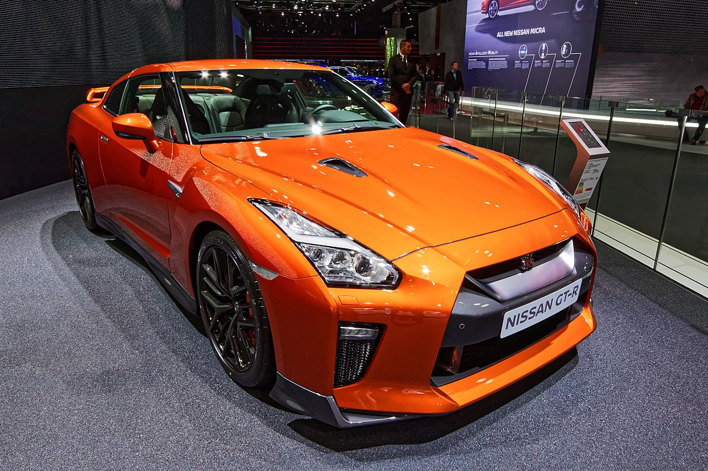
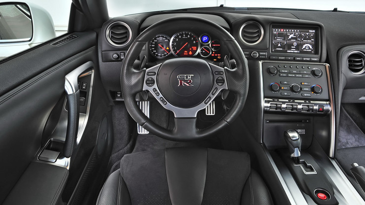
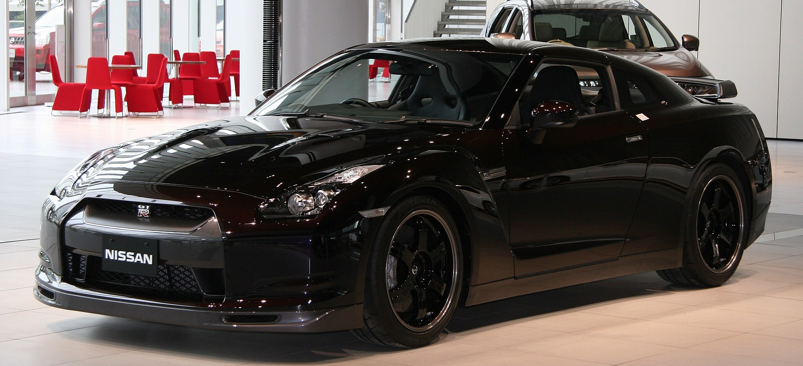
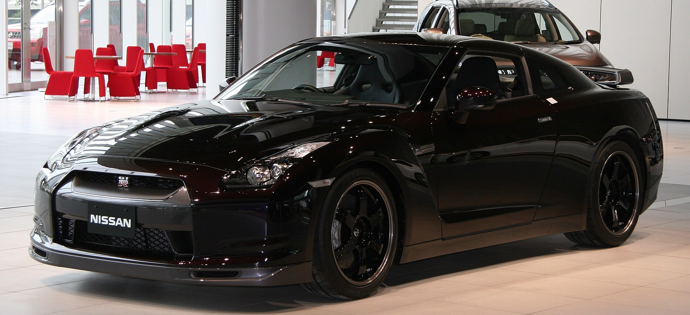

Nissan GT-R-Характеристики
Творці суперкара Nissan GT-R кидали виклик традиціям на кожному етапі розробки. Замість масивного мотора з невгамовним жагою палива в серці Nissan GT-R працює двигун V6 з подвійною турбіною об'ємом 3,8 л, потужністю 540 к.с. і з обертовим моментом 628 Нм. Характеристики? Як щодо розгону до 100 км / год менш ніж за 3 секунди і максимальної швидкості 315 км / год?
Каждый двигатель Nissan GT-R собирается вручную одним мастером в особо чистом, не содержащем пыли помещении, где поддерживается специальный температурный режим. Примерно так же производятся и двигатели для гоночных автомобилей «Формулы-1».Мы создавали суперкар Nissan GT-R, чтобы дать новое определение автомобилю высочайшего класса. Поэтому мы собрали лучших водителей-испытателей Nissan, чтобы создать автомобиль, который смог бы прекрасно зарекомендовать себя на гоночной трассе и на дороге в любых погодных условиях, кто бы ни находился за рулем.

Кожен двигун Nissan GT-R збирається вручну одним майстром в особливо чистому, що не містить пилу приміщенні, де підтримується спеціальний температурний режим. Приблизно так само виробляються і двигуни для гоночних автомобілів «Формули-1» .Ми створювали суперкар Nissan GT-R, щоб дати нове визначення автомобілю найвищого класу. Тому ми зібрали кращих водіїв-випробувачів Nissan, щоб створити автомобіль, який зміг би прекрасно зарекомендувати себе на гоночній трасі і на дорозі в будь-яких погодних умовах, хто б не перебував за кермом.
Розгін з нуля до 100 км / год займає просто неймовірні 2.8 секунди!
Двигун суперкара Nissan GT-R розташований в передній частині шасі для зручності управління. Крім того, коробка передач і роздавальна коробка розташовані на задній ведучої осі, так що Nissan GT-R - це перший автомобіль, який має одночасно незалежну задню підвіску, ведучий міст в блоці з коробкою передач і повний привід.
Технічні характеристики рестайлінг версій модельного року НЕ змініліся, если не брати до уваги факт глібокої модернізації підвіски и рульова управління. Перероблена підвіска стала більш міцною, енергоємної и комфортно, рульова управління гострішім и інформатівнім.
У моторному відсіку оновленогознайомі по дорестайлінгової Версії кросовер бензінові оппозітні двигуни.
2,0-літровій атмосферний (150 к.с. 198 Нм), 2,5-літровій атмосферний (171 к.с. 235 Нм) и 2,0-літровій з турбонаддувом (241 к.с., 350 Нм), всі двигуни Працюють в Парі з варіатором Lineatronic. В наявності фірмовий повний привід від Subaru Symmetrical AWD з активним розподілом крутного моменту.
Оновлення пішло Японський кросовер на Користь, так что новий Форестер, як и Ранее, одна з найкращих пропозіцій на Сайти Вся в своєму сегменті.
 
